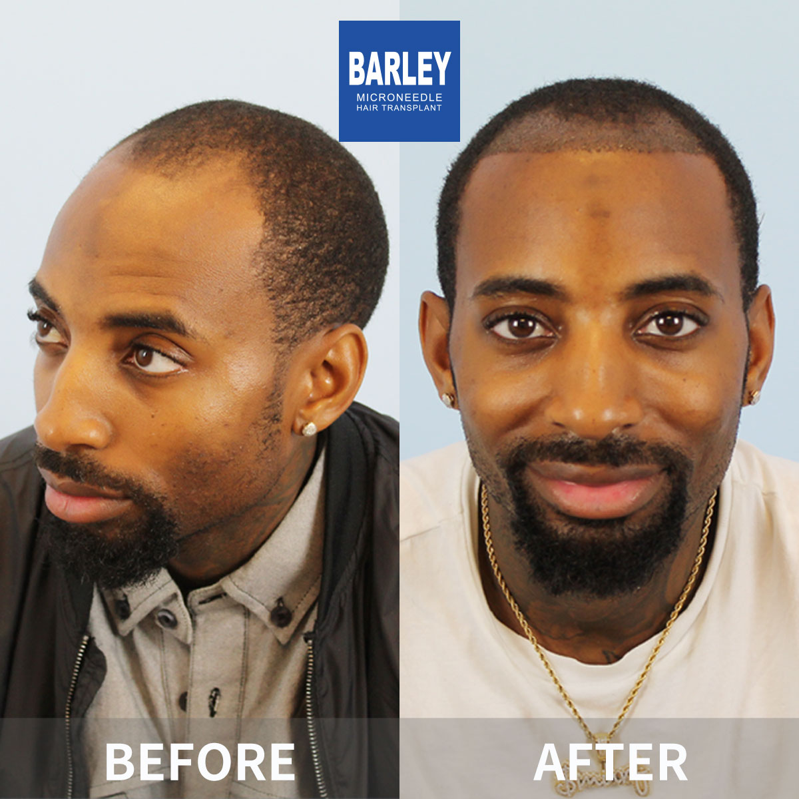

Explore our comprehensive collection of real patient results. Each case showcases the effectiveness of our advanced FUE and microneedle hair transplant techniques, with results that speak for themselves.
Find results that match your specific hair loss pattern and restoration goals





Numbers don't lie - see why thousands of patients trust Barley Hair Transplant Hospital
Over 100,000 hair transplant procedures completed successfully since 2006
Industry-leading satisfaction rate based on post-procedure patient surveys
Patients from over 50 countries trust us with their hair restoration journey
Nearly two decades of pioneering hair transplant innovation and patient care
Patients describe their real 12-month results, density, and how the before-after photos compare to their in-person outcome
"My 12-month result matches the 12-month milestone photos I was shown during consultation almost exactly - the hairline curve, the temple points, even the swirl in the crown. The before pictures I took in my bathroom at home line up perfectly with the clinic's photos. There's a little unevenness on my left temple if I stare very close, but my barber didn't spot anything. It's the natural, subtle result I wanted."
"I brought the same before photos from my phone to my 11-month check-in and we compared them side-by-side on the clinic iPad. The lighting was the same, the angles were the same, and the density difference is dramatic - probably 85 to 90% coverage compared to my original NW3 pattern. My sister cried when she saw me at Christmas because she hadn't seen my forehead covered since I was 22."
"What I notice most is that the hairline doesn't look plugged or doll-like, which was my biggest fear. Each graft was angled the same direction as my native hair, and the transition from transplanted density to my original sideburns is invisible. I comb my hair straight back now, no more fringe to cover the temples. Nobody at my new job has any idea. Density is about 82-85% of what my photos showed at 6 months."
"I had diffuse thinning across the whole top, not a defined bald spot, so I was worried one session wouldn't cut it. At month 10 I went back for a check and the surgeon said density was 88% of my goal - no touch-up needed right now, and that I only need a second session if after 18 months I want the vertex a little thicker. I'm leaning toward no, the first pass already looks good enough. Happy I didn't overdo it."
"My barber has been cutting my hair for 9 years and comments on every little change. After 11 months he asked whether I started using minoxidil because my hairline looked 'fuller and thicker' - he did not suspect a transplant at all. I told him the truth and he leaned in to examine the scalp with his mirror - he couldn't find a single scar or plug. Friends just say I 'look younger' and that my hair is 'growing back nicely' - no one asks more questions."
"I compared the clinic case photos of patient #2418 with my own head type before booking, so I already had realistic expectations - I wasn't going to look 18 again. What I got at 13 months is exactly what those case photos promised: a mature hairline, density in the crown when wet, and the ability to take decent selfies without searching for the perfect lighting angle. 100% the result I saw in the gallery."
Schedule your free consultation today and discover how Barley Hair Transplant can help you regain your confidence
Experience our modern and comfortable facilities

Private and professional

Comfortable post-op space

Welcoming entrance

Our state-of-the-art facility

Relax in our premium lounge

Sterile and advanced
Honest answers about real-world results, density, worst-case scenarios, and how to verify outcomes
Click to copy contact information
15810155700
+86 13730143529
hairtransplant@qq.com

Everyone's hair loss journey and solution are unique due to a variety of factors. Our hair restoration experts will assist you in determining the root cause and the best solution for your hair restoration plan. If you have any questions, please ask; we are happy to assist.